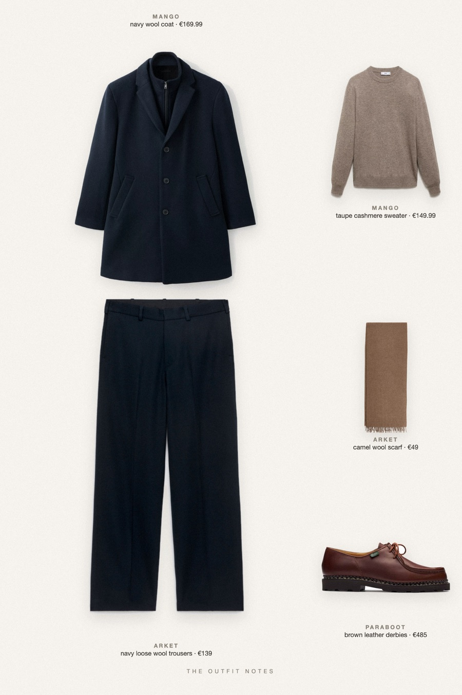

Taupe Navy
tonal winter, Milan dusk

Loro Piana look for less: the quiet luxury palette of navy and taupe, rebuilt with a navy wool coat, a 100% cashmere taupe sweater, loose navy wool trousers and a camel scarf. Paraboot Michael leather shoes anchor it. Winter outfit men can wear for the city, old money on a budget.
The pieces
This page contains affiliate links: if you buy through them, we may earn a commission at no extra cost to you. Disclosure.
 Mango
Mango
Navy wool coat
Shop Mango
Mango
Taupe cashmere sweater
Shop ARKET
ARKET
Navy loose wool trousers
Shop Paraboot
Paraboot
Brown leather derbies
Shop ARKET
ARKET
Camel wool scarf
Shop
Prices are indicative, taken when the look was published, and may have changed. Pictures of the outfit are AI-generated illustrations of real products; the product photos are the retailers' own.
Published 2 October 2026.